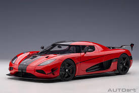

Koenigsegg Agera

A Swedish hypercar known for extreme speed and engineering. This is one of my favorite cars because I really like the unique desgin for the car, as well as this car was shown in the movie need for speed
Bugatti Veyron

A luxury supercar built for both speed and comfort. Same with the agera I really like the desgin for this car. The front of the car/fenders/bumper really pops out and is a fun show car.
Lamborghini Centenario

A limited-edition Lamborghini celebrating performance and design. Playing Forza horizon 3-this is the "main"/face cover for the game. And for design its one of the lamborghini's with the lowest suspenison!